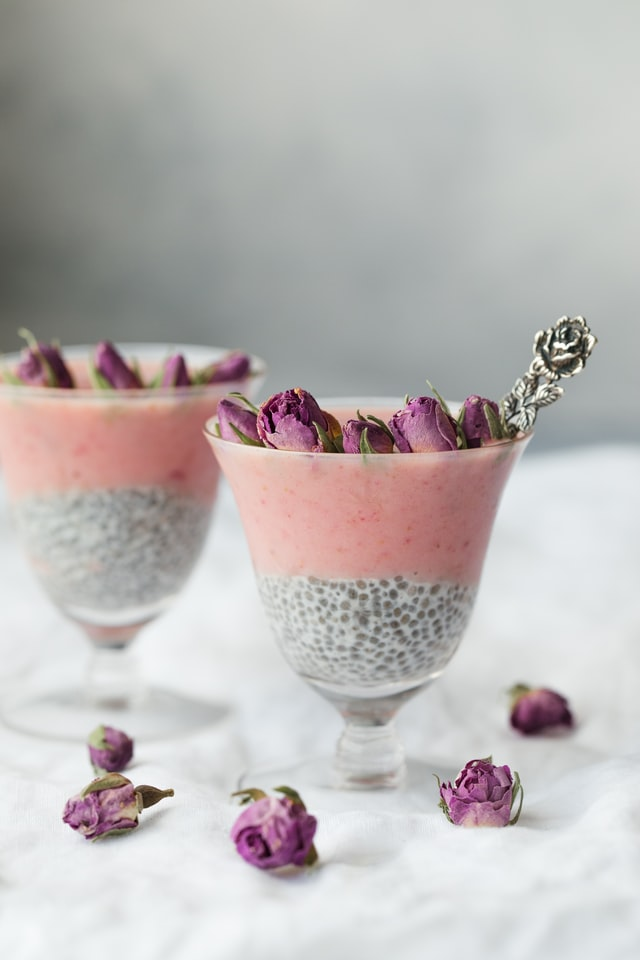

Rosewater and Coconut Chia Pudding

Ingredients
- Chia seeds
- Coconut milk
- Rose water
- Desiccated coconut
Instructions
- Mix all ingredients together in a large bowl.
- Leave mixture to rest for twenty minutes, mixing every now and then.
- Put in the fridge, letting it rest a few hours or overnight. The longer the better!